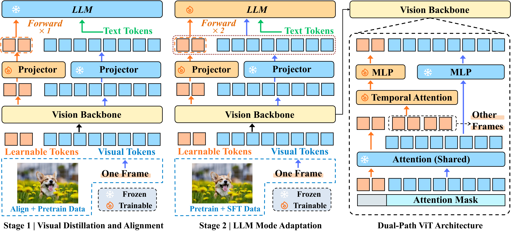
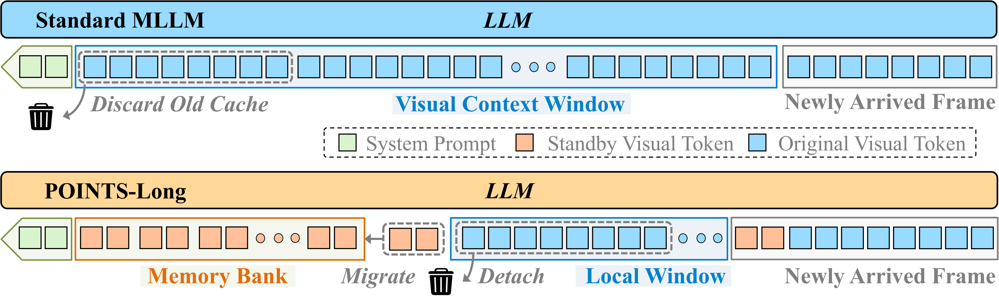
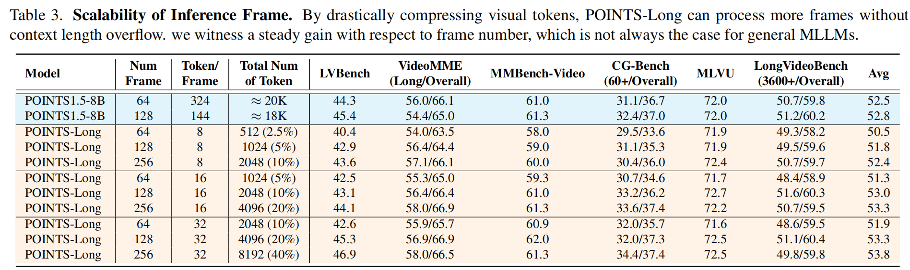
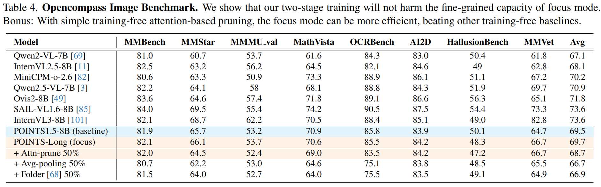
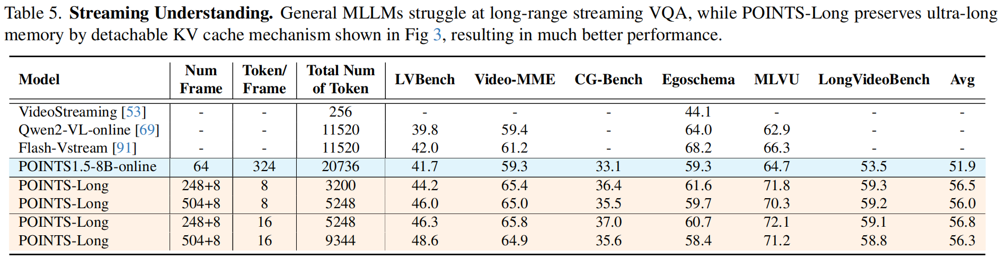
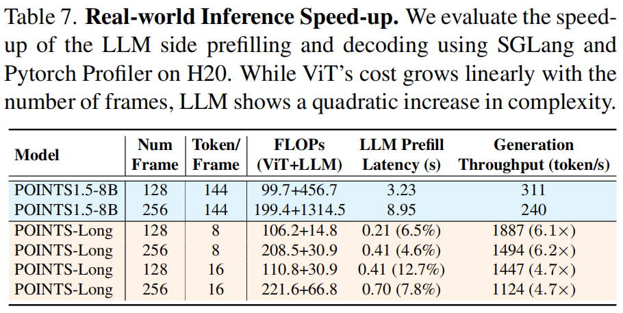

- Native dual-mode perception: a single MLLM that supports Focus (high-fidelity) and Standby (high-compression) visual understanding, enabling an explicit efficiency–accuracy choice at inference.
- Two-stage post-training: (i) visual distillation/alignment by training only new modules; (ii) LLM mode adaptation with a 2-forward objective to preserve Focus performance while learning Standby.
- Deployment-friendly design: asymmetric attention masking compatible with modern inference kernels (e.g., FlashAttention) and practical serving frameworks (e.g., SGLang).
- Streaming-ready memory: detachable KV-cache strategy that retains a high-fidelity local window while migrating compact standby-cache to a long-term memory bank.
Method

POINTS-Long architecture. A dual-path ViT introduces a small set of learnable standby tokens while keeping the original focus pathway unchanged. A two-stage post-training pipeline (visual distillation/alignment, then LLM mode adaptation) equips the model with an efficient Standby mode without harming the Focus mode.
Streaming Memory

Streaming inference with detachable KV cache. POINTS-Long maintains a high-fidelity local window (Focus) while migrating compact standby-cache into a long-term memory bank, enabling ultra-long streaming visual understanding without expensive re-prefills.
Main Results

OpenCompass video benchmark. Standby mode retains 97.7–99.7% performance using only 2.5–10% of the original tokens, while focus mode preserves (and slightly improves) the original performance.




